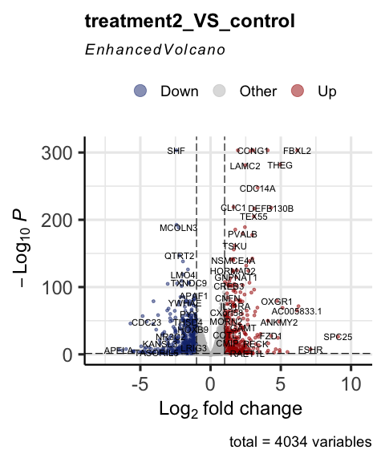
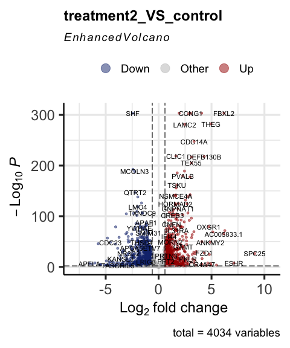
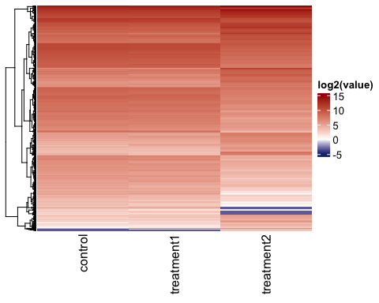
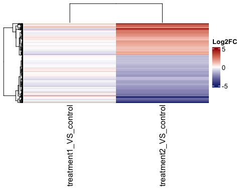
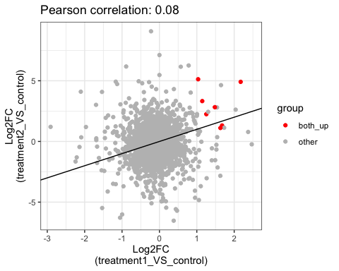
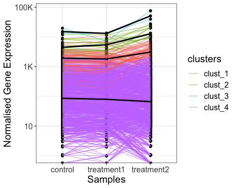

The goal of parcutils is to provide day to day bioinformatics utility functions. Most of the functions in the package are useful for analyzing and visualizing complex RNA-seq studies.
Installation
if(require("devtools") && require("BiocManager")){
options(repos = BiocManager::repositories() )
devtools::install_github("cparsania/parcutils")
} else{
install.packages(c("devtools","BiocManager"))
options(repos = BiocManager::repositories() )
devtools::install_github("cparsania/parcutils")
}RNA-seq analysis
Differential expression analysis
Prepare a count table
count_file <- system.file("extdata","toy_counts.txt" , package = "parcutils")
count_data <- readr::read_delim(count_file, delim = "\t")
count_data
#> # A tibble: 5,000 × 10
#> gene_id contr…¹ contr…² contr…³ treat…⁴ treat…⁵ treat…⁶ treat…⁷ treat…⁸
#> <chr> <dbl> <dbl> <dbl> <dbl> <dbl> <dbl> <dbl> <dbl>
#> 1 ENSG00000173… 0 0 0 0 0 0 0 0
#> 2 ENSG00000106… 1 0 2 0 0 1 1 1
#> 3 ENSG00000131… 2 0 2 0 0 1 1 1
#> 4 ENSG00000154… 652 690 639 607 453 461 809 994
#> 5 ENSG00000196… 3372 3631 3188 4644 3168 3514 4789 5466
#> 6 ENSG00000173… 694 784 829 974 580 716 413 545
#> 7 ENSG00000140… 87 73 81 100 77 72 63 87
#> 8 ENSG00000187… 4 4 2 0 5 2 1 4
#> 9 ENSG00000139… 1374 1789 1564 1933 1459 1584 482 729
#> 10 ENSG00000165… 3639 4533 3921 3879 3500 3439 3324 4683
#> # … with 4,990 more rows, 1 more variable: treat2_rep3 <dbl>, and abbreviated
#> # variable names ¹control_rep1, ²control_rep2, ³control_rep3, ⁴treat1_rep1,
#> # ⁵treat1_rep2, ⁶treat1_rep3, ⁷treat2_rep1, ⁸treat2_rep2Group replicates by samples
To run DESeq2, replicates for each sample needs to be grouped.
sample_info <- count_data %>% colnames() %>% .[-1] %>%
tibble::tibble(samples = . , groups = rep(c("control" ,"treatment1" , "treatment2") ,
each = 3))
sample_info
#> # A tibble: 9 × 2
#> samples groups
#> <chr> <chr>
#> 1 control_rep1 control
#> 2 control_rep2 control
#> 3 control_rep3 control
#> 4 treat1_rep1 treatment1
#> 5 treat1_rep2 treatment1
#> 6 treat1_rep3 treatment1
#> 7 treat2_rep1 treatment2
#> 8 treat2_rep2 treatment2
#> 9 treat2_rep3 treatment2NOTE: Samples which are present in the object ‘sample_info’ will be considered for differential expressed analysis.
Run DESeq2 for multiple differential gene comparison.
res <- parcutils::run_deseq_analysis(counts = count_data ,
sample_info = sample_info,
column_geneid = "gene_id" ,
cutoff_lfc = 1,
cutoff_pval = 0.05,
group_numerator = c("treatment1", "treatment2") ,
group_denominator = c("control"))Let’s have a look in to res
res
#> ┌────────────────────────────┐
#> │ │
#> │ Summary of DE analysis │
#> │ │
#> └────────────────────────────┘
#>
#>
#>
#> treatment1_VS_control
#> • number of up genes : 13.
#> • number of down genes : 28.
#> ──────────────────────────────
#>
#> treatment2_VS_control
#> • number of up genes : 333.
#> • number of down genes : 502.
#> ──────────────────────────────res is an object of improved dataframe - tibble. Each row in the res is a differential comparison which can be identified by the value from the column comp.
res$de_comparisons
#> [1] "treatment1_VS_control" "treatment2_VS_control"Data related to each differential comparison can be found from other columns of res.
For example, summary of differently expressed genes can be found from the column deg_summmary
res$deg_summmary
#> $treatment1_VS_control
#> # A tibble: 3 × 2
#> regul n
#> <chr> <int>
#> 1 Down 28
#> 2 other 3993
#> 3 Up 13
#>
#> $treatment2_VS_control
#> # A tibble: 3 × 2
#> regul n
#> <chr> <int>
#> 1 Down 502
#> 2 other 3199
#> 3 Up 333As described below there are several helper functions to get data from the res .
Get data from res using helper functions
# get normalised gene expression value for all genes across all samples.
parcutils::get_normalised_expression_matrix(x = res,
samples = NULL,
genes = NULL,
summarise_replicates = FALSE)
#> # A tibble: 4,034 × 10
#> gene_id treat…¹ treat…² treat…³ contr…⁴ contr…⁵ contr…⁶ treat…⁷ treat…⁸
#> <chr> <dbl> <dbl> <dbl> <dbl> <dbl> <dbl> <dbl> <dbl>
#> 1 ENSG00000154… 4.40e2 4.61e2 4.56e+2 694. 6.87e2 6.76e2 8.76e2 1.07e3
#> 2 ENSG00000196… 3.37e3 3.22e3 3.48e+3 3591. 3.62e3 3.37e3 5.19e3 5.87e3
#> 3 ENSG00000173… 7.07e2 5.90e2 7.09e+2 739. 7.81e2 8.77e2 4.47e2 5.85e2
#> 4 ENSG00000140… 7.26e1 7.83e1 7.13e+1 92.7 7.27e1 8.57e1 6.82e1 9.34e1
#> 5 ENSG00000139… 1.40e3 1.48e3 1.57e+3 1463. 1.78e3 1.66e3 5.22e2 7.82e2
#> 6 ENSG00000165… 2.81e3 3.56e3 3.40e+3 3875. 4.51e3 4.15e3 3.60e3 5.03e3
#> 7 ENSG00000179… 1.27e4 1.25e4 1.37e+4 13257. 1.34e4 1.40e4 1.08e4 1.51e4
#> 8 ENSG00000188… 4.61e2 4.34e2 4.59e+2 540. 5.92e2 5.66e2 4.68e2 5.80e2
#> 9 ENSG00000249… 0 2.03e0 9.90e-1 0 1.10e1 2.12e0 2.17e0 1.07e0
#> 10 ENSG00000110… 2.18e0 9.15e0 9.90e+0 11.7 5.97e0 1.59e1 5.42e0 4.29e0
#> # … with 4,024 more rows, 1 more variable: treat2_rep3 <dbl>, and abbreviated
#> # variable names ¹treat1_rep1, ²treat1_rep2, ³treat1_rep3, ⁴control_rep1,
#> # ⁵control_rep2, ⁶control_rep3, ⁷treat2_rep1, ⁸treat2_rep2
# average gene expression values across relicates
parcutils::get_normalised_expression_matrix(x = res,
samples = NULL,
genes = NULL,
summarise_replicates = T,
summarise_method = "median")
#> # A tibble: 4,034 × 4
#> gene_id control treatment1 treatment2
#> <chr> <dbl> <dbl> <dbl>
#> 1 ENSG00000000971:CFH 7349. 5727. 9849.
#> 2 ENSG00000001461:NIPAL3 134. 126. 68.2
#> 3 ENSG00000001497:LAS1L 9282. 8228. 7678.
#> 4 ENSG00000001631:KRIT1 23294. 29183. 20375.
#> 5 ENSG00000002746:HECW1 66.0 31.9 24.9
#> 6 ENSG00000003056:M6PR 6538. 7394. 6694.
#> 7 ENSG00000003436:TFPI 248. 225. 200.
#> 8 ENSG00000003509:NDUFAF7 462. 495. 384.
#> 9 ENSG00000004766:VPS50 40.2 38.6 121.
#> 10 ENSG00000004864:SLC25A13 370. 396. 844.
#> # … with 4,024 more rows
# get fold change values for all genes and all comparisons.
q_genes = c("ENSG00000196415:PRTN3", "ENSG00000221988:PPT2", "ENSG00000163138:PACRGL", "ENSG00000183840:GPR39", "ENSG00000146700:SSC4D", "ENSG00000163746:PLSCR2", "ENSG00000155918:RAET1L", "ENSG00000151458:ANKRD50", "ENSG00000167074:TEF", "ENSG00000130159:ECSIT")
parcutils::get_fold_change_matrix(x = res,
sample_comparisons = res$de_comparisons,
genes = q_genes)
#> # A tibble: 10 × 3
#> gene_id treatment1_VS_control treatment2_VS_control
#> <chr> <dbl> <dbl>
#> 1 ENSG00000196415:PRTN3 -0.0714 0.729
#> 2 ENSG00000221988:PPT2 0.0769 0.699
#> 3 ENSG00000163138:PACRGL 0.173 0.691
#> 4 ENSG00000183840:GPR39 0.170 0.904
#> 5 ENSG00000146700:SSC4D 0.0793 0.773
#> 6 ENSG00000163746:PLSCR2 0.0321 0.747
#> 7 ENSG00000155918:RAET1L 0.467 2.63
#> 8 ENSG00000151458:ANKRD50 -0.0441 1.91
#> 9 ENSG00000167074:TEF -0.0815 0.681
#> 10 ENSG00000130159:ECSIT 0.0317 0.751
# get differentially expressed genes for given comparison
parcutils::get_genes_by_regulation(x = res,
sample_comparison = "treatment1_VS_control",
regulation = "both" # can be one of the "up" , "down" , "both", "other", "all"
)
#> ENSG00000250305:TRMT9B ENSG00000134308:YWHAQ
#> down down
#> ENSG00000123575:FAM199X ENSG00000148482:SLC39A12
#> down down
#> ENSG00000175264:CHST1 ENSG00000141933:TPGS1
#> down down
#> ENSG00000165621:OXGR1 ENSG00000104081:BMF
#> down down
#> ENSG00000278023:RDM1 ENSG00000172264:MACROD2
#> down down
#> ENSG00000162971:TYW5 ENSG00000198682:PAPSS2
#> down down
#> ENSG00000125445:MRPS7 ENSG00000138670:RASGEF1B
#> down down
#> ENSG00000124839:RAB17 ENSG00000069869:NEDD4
#> down down
#> ENSG00000174576:NPAS4 ENSG00000143514:TP53BP2
#> down down
#> ENSG00000181009:OR52N5 ENSG00000257315:ZBED6
#> down down
#> ENSG00000141748:ARL5C ENSG00000198886:MT-ND4
#> down down
#> ENSG00000157045:NTAN1 ENSG00000165131:LLCFC1
#> down down
#> ENSG00000277611:Z98752.3 ENSG00000158089:GALNT14
#> down down
#> ENSG00000124784:RIOK1 ENSG00000103197:TSC2
#> down down
#> ENSG00000187193:MT1X ENSG00000269533:AC003002.3
#> up up
#> ENSG00000065427:KARS1 ENSG00000007171:NOS2
#> up up
#> ENSG00000285447:ZNF883 ENSG00000111275:ALDH2
#> up up
#> ENSG00000279111:OR10X1 ENSG00000167617:CDC42EP5
#> up up
#> ENSG00000186566:GPATCH8 ENSG00000232423:PRAMEF6
#> up up
#> ENSG00000182103:FAM181B ENSG00000172500:FIBP
#> up up
#> ENSG00000151033:LYZL2
#> up
#> Levels: up down other
# get replicates group data
parcutils::.group_replicates_by_sample(res)
#> # A tibble: 9 × 2
#> groups samples
#> <chr> <chr>
#> 1 treatment1 treat1_rep1
#> 2 treatment1 treat1_rep2
#> 3 treatment1 treat1_rep3
#> 4 control control_rep1
#> 5 control control_rep2
#> 6 control control_rep3
#> 7 treatment2 treat2_rep1
#> 8 treatment2 treat2_rep2
#> 9 treatment2 treat2_rep3Generate several visualizations from res
Visualize pairwise correlation between replicates
parcutils::get_pairwise_corr_plot(res, samples =c("control" ,"treatment1"))
#> $control

Visualize all sample correlation by heat box
parcutils::get_corr_heatbox(x = res, show_corr_values = T, cluster_samples = F)
Visualize samples by Principle Component Analysis (PCA)
parcutils::get_pca_plot(x = res,
samples =c("control" ,"treatment1" ,"treatment2"))Counts of diff expressed genes
parcutils::get_diff_gene_count_barplot(x = res)
change color of the bars
parcutils::get_diff_gene_count_barplot(x = res, col_down = "green4")
Visualize differential expressed genes by volcano plot
parcutils::get_volcano_plot(x = res, sample_comparison = "treatment2_VS_control",
col_up = "#a40000",
col_down = "#16317d",
repair_genes = T,
col_other = "grey")
# change cutoffs
parcutils::get_volcano_plot(x = res, repair_genes = T,
sample_comparison = "treatment2_VS_control",
pval_cutoff = 0.01,
log2fc_cutoff = 0.6,
col_up = "#a40000",
col_down = "#16317d",
col_other = "grey")
Visualize gene expression distribution using box plot
# all replicates
parcutils::get_gene_expression_box_plot(x = res,
samples =c("control" ,"treatment1"),
group_replicates = FALSE,
convert_log2 = T)
# summarise replicates
parcutils::get_gene_expression_box_plot(x = res,
samples =c("control" ,"treatment1"),
group_replicates = T,
convert_log2 = T)
Visualize genes by heatmaps
genes_for_hm = parcutils::get_genes_by_regulation(x = res,
sample_comparison = res$de_comparisons[[2]],
regulation = "both")
# heatmap of normalised gene expression values across samples
hm1 <- parcutils::get_gene_expression_heatmap(x = res,
samples = c("control","treatment1" , "treatment2") ,
genes = genes_for_hm %>% names() ,
convert_zscore = FALSE,
convert_log2 = T,
summarise_replicates = T,
name = "log2(value)" , color_default = F,
col =
circlize::colorRamp2(breaks = c(-5,0,15), colors = c("#16317d","white","#a40000")),
cluster_columns = FALSE)
ComplexHeatmap::draw(hm1)
# Visualise z-score and show all replicates.
hm2 <- parcutils::get_gene_expression_heatmap(x = res,
samples = c("control","treatment1") ,
name = "Z-score",
summarise_replicates = F,
col =
circlize::colorRamp2(breaks = c(-2,0,2), colors = c("#16317d","white","#a40000")),color_default = F,
genes = genes_for_hm %>% names() ,
convert_zscore = TRUE,
cluster_columns = FALSE)
ComplexHeatmap::draw(hm2)
# log2 FC heatamap
hm3 <- parcutils::get_fold_change_heatmap(x = res,
sample_comparisons = res$de_comparisons,
genes = genes_for_hm %>% names() ,
color_default = F,
col =
circlize::colorRamp2(breaks = c(-5,0,5), colors = c("#16317d","white","#a40000")),
name= "Log2FC")
ComplexHeatmap::draw(hm3)
Visualize differential genes overlap between comparison
us_plot <- parcutils::plot_deg_upsets(x = res,
sample_comparisons = res$de_comparisons)
us_plot$treatment1_VS_control_AND_treatment2_VS_control$upset_plot %>% print()
# get list of intersecting genes.
us_plot$treatment1_VS_control_AND_treatment2_VS_control$upset_intersects %>% print()
#> # A tibble: 7 × 2
#> set elements
#> <chr> <list>
#> 1 treatment1_VS_control_up <chr [6]>
#> 2 treatment1_VS_control_up,treatment2_VS_control_up <chr [7]>
#> 3 treatment2_VS_control_up <chr [318]>
#> 4 treatment2_VS_control_up,treatment1_VS_control_down <chr [8]>
#> 5 treatment1_VS_control_down,treatment2_VS_control_down <chr [7]>
#> 6 treatment1_VS_control_down <chr [13]>
#> 7 treatment2_VS_control_down <chr [495]>Visualize common DE genes between comparison by scatter plot
# show common up and down genes
parcutils::get_fold_change_scatter_plot(x = res,
sample_comparisons = res$de_comparisons, point_size = 3,label_size = 3,repair_genes = T)
# show common up and down genes
parcutils::get_fold_change_scatter_plot(x = res,
sample_comparisons = res$de_comparisons,
point_size = 3,
label_size = 3,
repair_genes = T)
# show common up genes
parcutils::get_fold_change_scatter_plot(x = res,
sample_comparisons = res$de_comparisons,
point_size = 5,
label_size = 4,
color_label = "both_up",
col_up = "red",
repair_genes = T)
# show common down genes
parcutils::get_fold_change_scatter_plot(x = res,
sample_comparisons = res$de_comparisons,
point_size = 5,
label_size = 4,
color_label = "both_down",
col_down = "green4",
repair_genes = T)Visualize genes by line plot
genes_for_lineplot = parcutils::get_genes_by_regulation(x = res,
sample_comparison = res$de_comparisons[[2]],
regulation = "both") %>% names()
# line plot of gene expression values
parcutils::get_gene_expression_line_plot(x = res,
genes = genes_for_lineplot ,
samples = c("control","treatment1","treatment2"),summarise_replicates = T, show_average_line = T) +
ggplot2::theme(text = ggplot2::element_text(size = 15))
# line plot of gene expression values with k-means clustering
parcutils::get_gene_expression_line_plot(x = res,
km = 4,
genes = genes_for_lineplot ,
samples = c("control","treatment1","treatment2"),summarise_replicates = T, show_average_line = T) +
ggplot2::theme(text = ggplot2::element_text(size = 15))
# line plot of gene expression values with k-means clustering
parcutils::get_gene_expression_line_plot(x = res,
km = 4,
facet_clusters = T,
genes = genes_for_lineplot ,
samples = c("control","treatment1","treatment2"),summarise_replicates = T, show_average_line = T) +
ggplot2::theme(text = ggplot2::element_text(size = 15),
axis.text.x = ggplot2::element_text(angle = 40,hjust = 0.8))
# Fold change values
parcutils::get_fold_change_line_plot(x = res,
genes = genes_for_lineplot ,
line_transparency = 0.5,
km = 2,facet_clusters = T,
sample_comparisons = c("treatment1_VS_control", "treatment2_VS_control"),
average_line_summary_method = "mean",
show_average_line = T) +
ggplot2::theme(text = ggplot2::element_text(size = 15),
axis.text.x = ggplot2::element_text(angle = 40,hjust = 0.8))Perform gene ontology analysis and visualization of all UP/DOWN genes from all comparisons in one go.
go_results <- parcutils::get_go_emap_plot(x = res)
# GO results as a table
go_results$go_enrichment_output
#> list()
# GO results as an emap plot
go_results$go_emap_plots
#> NULLShow overlapping genes through VENN diagram
parcutils::plot_deg_venn(res, sample_comparisons = res$de_comparisons,regulation = "up")
parcutils::plot_deg_venn(res, sample_comparisons = res$de_comparisons,regulation = "down")
parcutils::plot_deg_venn(res, sample_comparisons = res$de_comparisons,regulation = "both")Other functions
Alignment summary
star_align_log_file <- system.file("extdata" , "a_Log.final.out" , package = "parcutils")
x = parcutils::get_star_align_log_summary(log_file = star_align_log_file)
print(x)
#> # A tibble: 13 × 2
#> type val
#> <chr> <chr>
#> 1 Number of input reads 41936201
#> 2 Uniquely mapped reads number 40090105
#> 3 Uniquely mapped reads % 95.60%
#> 4 Average input read length 300
#> 5 Average mapped length 298.24
#> 6 Number of reads mapped to multiple loci 900879
#> 7 % of reads mapped to multiple loci 2.15%
#> 8 Number of reads mapped to too many loci 9335
#> 9 % of reads mapped to too many loci 0.02%
#> 10 Number of reads unmapped: too short 921464
#> 11 % of reads unmapped: too short 2.20%
#> 12 Number of reads unmapped: other 14418
#> 13 % of reads unmapped: other 0.03%
# plot alignment summary
star_align_log_file_dir <- system.file("extdata" , package = "parcutils")
star_align_log_files <- fs::dir_ls(star_align_log_file_dir,
glob = "*Log.final.out" ,
recurse = T,type = "file")
names(star_align_log_files) <- NULL
parcutils::get_star_align_log_summary_plot(x = star_align_log_files,
col_total_reads = "red",
col_mapped_reads = "blue")